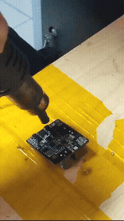

Experiencia Laboral
Mi perfil se basa en la exploración y aplicación de tecnologías como robótica, impresión 3D, electrónica, seguridad electrónica y programación asistida por IA para ofrecer soluciones creativas.
Historial Profesional
Técnico de soporte en seguridad electrónica
SEKUNET S.A • 2025 - Presente
• Investigación de sistemas de seguridad electrónica.
• Mantenimiento preventivo y correctivo (Hardware/Software).
• Creación de guías técnicas y capacitación de personal.
Freelancer
Esc. Fray Jose Antonio de Liendo y Goicoechea • 2022 - 2024
• Mantenimiento de infraestructura tecnológica y plataformas digitales.
• Desarrollo de herramientas y gestión de contenido multimedia.
Técnico de soporte
HR Soluciones • 2022 - 2023
• Investigación de herramientas de integración de software libre.
• Soporte técnico integral y reparación de equipos.
• Creación de contenido promocional y capacitación técnica.
